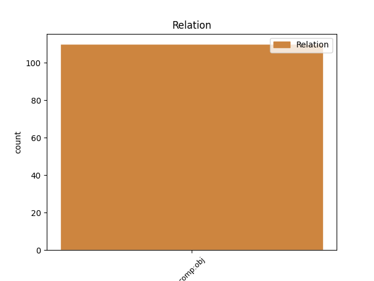
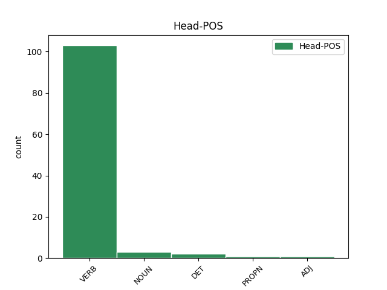
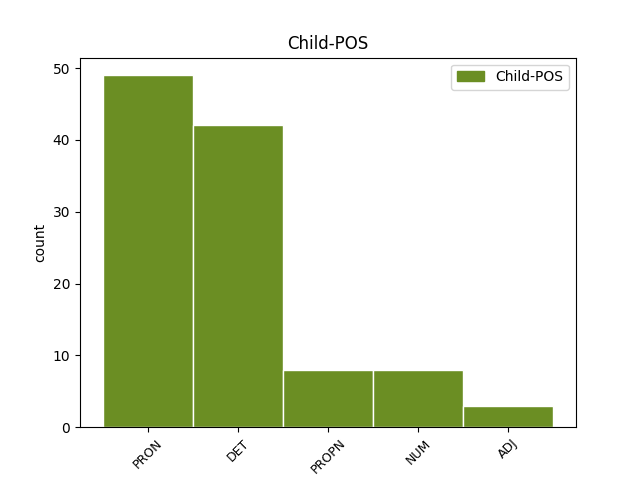

Distribution of features within this leaf



Agreement Rules sorted by frequency.
- When the dependent token is the direct object complements(comp:obj) of the head token, and the head token is VERB and the dependent token is PRON.
1 tako _ _ _ _ 0 _ _ _
2 kot _ _ _ _ 0 _ _ _
3 sem _ _ _ _ 0 _ _ _
4 mu on PRON Pp3msd--y Case=Dat|Gender=Masc|Number=Sing|Person=3|PronType=Prs|Variant=Short 5 comp:obj _ msd=Zotmed--k|word=mu
5 naročil naročiti VERB Vmep-sm Aspect=Perf|Gender=Masc|Number=Sing|VerbForm=Part 0 _ _ _
6 tako _ _ _ _ 0 _ _ _
7 je _ _ _ _ 0 _ _ _
8 treba _ _ _ _ 0 _ _ _
9 to _ _ _ _ 0 _ _ _
10 narediti _ _ _ _ 0 _ _ _
11 eee _ _ _ _ 0 _ _ _
12 sem _ _ _ _ 0 _ _ _
13 mu _ _ _ _ 0 _ _ _
14 vse _ _ _ _ 0 _ _ _
15 lepo _ _ _ _ 0 _ _ _
16 povedal _ _ _ _ 0 _ _ _
17 in _ _ _ _ 0 _ _ _
18 razložil _ _ _ _ 0 _ _ _
19 eee _ _ _ _ 0 _ _ _
20 sem _ _ _ _ 0 _ _ _
21 pa _ _ _ _ 0 _ _ _
22 glih _ _ _ _ 0 _ _ _
23 malo _ _ _ _ 0 _ _ _
24 razočaran _ _ _ _ 0 _ _ _
25 z _ _ _ _ 0 _ _ _
26 vašo _ _ _ _ 0 _ _ _
27 volno _ _ _ _ 0 _ _ _
1 eee _ _ _ _ 0 _ _ _
2 pravzaprav _ _ _ _ 0 _ _ _
3 tam _ _ _ _ 0 _ _ _
4 čeprav _ _ _ _ 0 _ _ _
5 bi _ _ _ _ 0 _ _ _
6 eno en NUM Mlpfsa Case=Acc|Gender=Fem|Number=Sing|NumForm=Word|NumType=Card 8 comp:obj _ msd=Kbzzet|word=eno
7 baje _ _ _ _ 0 _ _ _
8 morala morati VERB Vmpp-sf Aspect=Imp|Gender=Fem|Number=Sing|VerbForm=Part 0 _ _ _
9 eno _ _ _ _ 0 _ _ _
10 morala _ _ _ _ 0 _ _ _
11 poznati _ _ _ _ 0 _ _ _
12 eee _ _ _ _ 0 _ _ _
13 zato _ _ _ _ 0 _ _ _
14 ker _ _ _ _ 0 _ _ _
15 je _ _ _ _ 0 _ _ _
16 rekla _ _ _ _ 0 _ _ _
17 da _ _ _ _ 0 _ _ _
18 s _ _ _ _ 0 _ _ _
19 [gap] _ _ _ _ 0 _ _ _
20 da _ _ _ _ 0 _ _ _
21 je _ _ _ _ 0 _ _ _
22 mama _ _ _ _ 0 _ _ _
23 od _ _ _ _ 0 _ _ _
24 enega _ _ _ _ 0 _ _ _
25 mojega _ _ _ _ 0 _ _ _
26 učenca _ _ _ _ 0 _ _ _
27 da _ _ _ _ 0 _ _ _
28 sem _ _ _ _ 0 _ _ _
29 jaz _ _ _ _ 0 _ _ _
30 bila _ _ _ _ 0 _ _ _
31 njemu _ _ _ _ 0 _ _ _
32 razredničarka _ _ _ _ 0 _ _ _
33 [name:organisation] _ _ _ _ 0 _ _ _
1 to _ _ _ _ 0 _ _ _
2 sam _ _ _ _ 0 _ _ _
3 videl _ _ _ _ 0 _ _ _
4 in _ _ _ _ 0 _ _ _
5 tako _ _ _ _ 0 _ _ _
6 no _ _ _ _ 0 _ _ _
7 ko _ _ _ _ 0 _ _ _
8 sem _ _ _ _ 0 _ _ _
9 jaz _ _ _ _ 0 _ _ _
10 končal končati VERB Vmep-sm Aspect=Perf|Gender=Masc|Number=Sing|VerbForm=Part 0 _ _ _
11 ikš IKŠ PROPN Npmsan Animacy=Inan|Case=Acc|Gender=Masc|Number=Sing 10 comp:obj _ msd=Slmetn|word=Ikaeš
12 eee _ _ _ _ 0 _ _ _
13 ja _ _ _ _ 0 _ _ _
14 učili _ _ _ _ 0 _ _ _
15 so _ _ _ _ 0 _ _ _
16 nas _ _ _ _ 0 _ _ _
17 imeli _ _ _ _ 0 _ _ _
18 smo _ _ _ _ 0 _ _ _
19 slovnico _ _ _ _ 0 _ _ _
20 estetsko _ _ _ _ 0 _ _ _
21 vzgojo _ _ _ _ 0 _ _ _
22 eee _ _ _ _ 0 _ _ _
23 mogel _ _ _ _ 0 _ _ _
24 sem _ _ _ _ 0 _ _ _
25 prebrati _ _ _ _ 0 _ _ _
26 prečitati _ _ _ _ 0 _ _ _
27 kako _ _ _ _ 0 _ _ _
28 knjigo _ _ _ _ 0 _ _ _
1 ob _ _ _ _ 0 _ _ _
2 tem _ _ _ _ 0 _ _ _
3 vivaldijevem _ _ _ _ 0 _ _ _
4 stavku _ _ _ _ 0 _ _ _
5 sem _ _ _ _ 0 _ _ _
6 se _ _ _ _ 0 _ _ _
7 spomnila _ _ _ _ 0 _ _ _
8 kako _ _ _ _ 0 _ _ _
9 so _ _ _ _ 0 _ _ _
10 nekdaj _ _ _ _ 0 _ _ _
11 plesali _ _ _ _ 0 _ _ _
12 in _ _ _ _ 0 _ _ _
13 se _ _ _ _ 0 _ _ _
14 priklanjali priklanjati VERB Vmpp-pm Aspect=Imp|Gender=Masc|Number=Plur|VerbForm=Part 0 _ _ _
15 drug _ _ _ _ 0 _ _ _
16 drugemu drug ADJ Mlpmsd Case=Dat|Gender=Masc|Number=Sing 14 comp:obj _ msd=Kbzmed|word=drugemu
1 eee _ _ _ _ 0 _ _ _
2 to ta DET Pd-nsa Case=Acc|Gender=Neut|Number=Sing|PronType=Dem 5 comp:obj _ msd=Zk-set|word=to
3 bi _ _ _ _ 0 _ _ _
4 te _ _ _ _ 0 _ _ _
5 bilo biti VERB Va-p-sn Gender=Neut|Number=Sing|VerbForm=Part 0 _ _ _
6 vse _ _ _ _ 0 _ _ _
7 ven _ _ _ _ 0 _ _ _
8 pobrati _ _ _ _ 0 _ _ _
9 samo _ _ _ _ 0 _ _ _
10 jaz _ _ _ _ 0 _ _ _
11 sem _ _ _ _ 0 _ _ _
12 to _ _ _ _ 0 _ _ _
13 ne _ _ _ _ 0 _ _ _
14 imela _ _ _ _ 0 _ _ _
15 toliko _ _ _ _ 0 _ _ _
16 časa _ _ _ _ 0 _ _ _
1 glavni _ _ _ _ 0 _ _ _
2 lik _ _ _ _ 0 _ _ _
3 je _ _ _ _ 0 _ _ _
4 bil _ _ _ _ 0 _ _ _
5 policaj _ _ _ _ 0 _ _ _
6 zdaj _ _ _ _ 0 _ _ _
7 pa _ _ _ _ 0 _ _ _
8 je _ _ _ _ 0 _ _ _
9 župan _ _ _ _ 0 _ _ _
10 kot _ _ _ _ 0 _ _ _
11 v _ _ _ _ 0 _ _ _
12 mariboru _ _ _ _ 0 _ _ _
13 še _ _ _ _ 0 _ _ _
14 m _ _ _ _ 0 _ _ _
15 [gap] _ _ _ _ 0 _ _ _
16 ime _ _ _ _ 0 _ _ _
17 mu on PRON Pp3msd--y Case=Dat|Gender=Masc|Number=Sing|Person=3|PronType=Prs|Variant=Short 19 comp:obj _ msd=Zotmed--k|word=mu
18 je _ _ _ _ 0 _ _ _
19 frenk Frenk PROPN Npmsn Case=Nom|Gender=Masc|Number=Sing 0 _ _ _
20 drži _ _ _ _ 0 _ _ _
21 ali _ _ _ _ 0 _ _ _
22 ne _ _ _ _ 0 _ _ _
23 drži _ _ _ _ 0 _ _ _
24 ? _ _ _ _ 0 _ _ _
1 ja _ _ _ _ 0 _ _ _
2 čakajte _ _ _ _ 0 _ _ _
3 to ta DET Pd-nsn Case=Nom|Gender=Neut|Number=Sing|PronType=Dem 0 _ _ _
4 nič nič DET Pz-nsa Case=Acc|Gender=Neut|Number=Sing|PronType=Neg 3 comp:obj _ msd=Zl-set|word=nč
5 na _ _ _ _ 0 _ _ _
6 p _ _ _ _ 0 _ _ _
7 [gap] _ _ _ _ 0 _ _ _
8 referendum _ _ _ _ 0 _ _ _
9 ne _ _ _ _ 0 _ _ _
10 pomeni _ _ _ _ 0 _ _ _
11 nič _ _ _ _ 0 _ _ _
Disagree Examples:
1 tega ta DET Pd-nsg Case=Gen|Gender=Neut|Number=Sing|PronType=Dem 5 comp:obj _ msd=Zk-ser|word=tega
2 bi _ _ _ _ 0 _ _ _
3 se _ _ _ _ 0 _ _ _
4 nekako _ _ _ _ 0 _ _ _
5 mogel moči VERB Vmpp-sm Aspect=Imp|Gender=Masc|Number=Sing|VerbForm=Part 0 _ _ _
6 če _ _ _ _ 0 _ _ _
7 bo _ _ _ _ 0 _ _ _
8 hotel _ _ _ _ 0 _ _ _
9 preživeti _ _ _ _ 0 _ _ _
1 kdo _ _ _ _ 0 _ _ _
2 pa _ _ _ _ 0 _ _ _
3 je _ _ _ _ 0 _ _ _
4 to _ _ _ _ 0 _ _ _
5 d _ _ _ _ 0 _ _ _
6 [gap] _ _ _ _ 0 _ _ _
7 to ta DET Pd-nsa Case=Acc|Gender=Neut|Number=Sing|PronType=Dem 10 comp:obj _ msd=Zk-set|word=to
8 ste _ _ _ _ 0 _ _ _
9 vi _ _ _ _ 0 _ _ _
10 dobili dobiti VERB Vmep-pm Aspect=Perf|Gender=Masc|Number=Plur|VerbForm=Part 0 _ _ _
11 [gap] _ _ _ _ 0 _ _ _
1 eee _ _ _ _ 0 _ _ _
2 pol _ _ _ _ 0 _ _ _
3 smo _ _ _ _ 0 _ _ _
4 danes _ _ _ _ 0 _ _ _
5 smo _ _ _ _ 0 _ _ _
6 pri _ _ _ _ 0 _ _ _
7 maši _ _ _ _ 0 _ _ _
8 peli _ _ _ _ 0 _ _ _
9 smo _ _ _ _ 0 _ _ _
10 jo on PRON Pp3fsa--y Case=Acc|Gender=Fem|Number=Sing|Person=3|PronType=Prs|Variant=Short 11 comp:obj _ msd=Zotzet--k|word=jo
11 povabili povabiti VERB Vmep-pm Aspect=Perf|Gender=Masc|Number=Plur|VerbForm=Part 0 _ _ _
12 zraven _ _ _ _ 0 _ _ _
13 pol _ _ _ _ 0 _ _ _
14 je _ _ _ _ 0 _ _ _
15 pa _ _ _ _ 0 _ _ _
16 rekla _ _ _ _ 0 _ _ _
17 ja _ _ _ _ 0 _ _ _
18 bom _ _ _ _ 0 _ _ _
19 prišla _ _ _ _ 0 _ _ _
20 pol _ _ _ _ 0 _ _ _
21 mi _ _ _ _ 0 _ _ _
22 je _ _ _ _ 0 _ _ _
23 pa _ _ _ _ 0 _ _ _
24 danes _ _ _ _ 0 _ _ _
25 malo _ _ _ _ 0 _ _ _
26 pred _ _ _ _ 0 _ _ _
27 mašo _ _ _ _ 0 _ _ _
28 mi _ _ _ _ 0 _ _ _
29 je _ _ _ _ 0 _ _ _
30 sporočilo _ _ _ _ 0 _ _ _
31 poslala _ _ _ _ 0 _ _ _
32 da _ _ _ _ 0 _ _ _
33 nekaj _ _ _ _ 0 _ _ _
34 vmes _ _ _ _ 0 _ _ _
35 prišlo _ _ _ _ 0 _ _ _
36 in _ _ _ _ 0 _ _ _
37 ne _ _ _ _ 0 _ _ _
38 more _ _ _ _ 0 _ _ _
1 se _ _ _ _ 0 _ _ _
2 smešno _ _ _ _ 0 _ _ _
3 obnašajo _ _ _ _ 0 _ _ _
4 no _ _ _ _ 0 _ _ _
5 zadnje _ _ _ _ 0 _ _ _
6 čase _ _ _ _ 0 _ _ _
7 mislim _ _ _ _ 0 _ _ _
8 sami _ _ _ _ 0 _ _ _
9 so _ _ _ _ 0 _ _ _
10 pripeljali _ _ _ _ 0 _ _ _
11 do _ _ _ _ 0 _ _ _
12 takih _ _ _ _ 0 _ _ _
13 odnosov _ _ _ _ 0 _ _ _
14 kakršni _ _ _ _ 0 _ _ _
15 so _ _ _ _ 0 _ _ _
16 se _ _ _ _ 0 _ _ _
17 mi _ _ _ _ 0 _ _ _
18 zdi _ _ _ _ 0 _ _ _
19 nismo _ _ _ _ 0 _ _ _
20 mi _ _ _ _ 0 _ _ _
21 nič nič DET Pz-nsa Case=Acc|Gender=Neut|Number=Sing|PronType=Neg 22 comp:obj _ msd=Zl-set|word=nč
22 naredili narediti VERB Vmep-pm Aspect=Perf|Gender=Masc|Number=Plur|VerbForm=Part 0 _ _ _
23 pri _ _ _ _ 0 _ _ _
24 temu _ _ _ _ 0 _ _ _
1 no _ _ _ _ 0 _ _ _
2 in _ _ _ _ 0 _ _ _
3 potem _ _ _ _ 0 _ _ _
4 so _ _ _ _ 0 _ _ _
5 eee _ _ _ _ 0 _ _ _
6 na _ _ _ _ 0 _ _ _
7 kranjski _ _ _ _ 0 _ _ _
8 koči _ _ _ _ 0 _ _ _
9 na _ _ _ _ 0 _ _ _
10 ledinah _ _ _ _ 0 _ _ _
11 jim on PRON Pp3mpd--y Case=Dat|Gender=Masc|Number=Plur|Person=3|PronType=Prs|Variant=Short 14 comp:obj _ msd=Zotmmd--k|word=jim
12 je _ _ _ _ 0 _ _ _
13 ravnokar _ _ _ _ 0 _ _ _
14 odpovedala odpovedati VERB Vmep-sf Aspect=Perf|Gender=Fem|Number=Sing|VerbForm=Part 0 _ _ _
15 oskrbnica _ _ _ _ 0 _ _ _
16 in _ _ _ _ 0 _ _ _
17 sem _ _ _ _ 0 _ _ _
18 pri _ _ _ _ 0 _ _ _
19 devetnajstih _ _ _ _ 0 _ _ _
20 letih _ _ _ _ 0 _ _ _
21 ljubljančanka _ _ _ _ 0 _ _ _
22 z _ _ _ _ 0 _ _ _
23 ruzakom _ _ _ _ 0 _ _ _
24 prišla _ _ _ _ 0 _ _ _
25 gor _ _ _ _ 0 _ _ _
26 in _ _ _ _ 0 _ _ _
27 sem _ _ _ _ 0 _ _ _
28 bila _ _ _ _ 0 _ _ _
29 kar _ _ _ _ 0 _ _ _
30 naenkrat _ _ _ _ 0 _ _ _
31 en _ _ _ _ 0 _ _ _
32 mesec _ _ _ _ 0 _ _ _
33 pa _ _ _ _ 0 _ _ _
34 pol _ _ _ _ 0 _ _ _
35 tam _ _ _ _ 0 _ _ _
36 oskrbnica _ _ _ _ 0 _ _ _